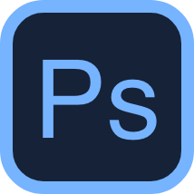
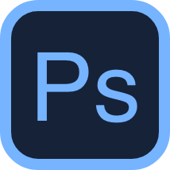

As part of a recent school assignment, I had the opportunity to create a 4-page website layout using Adobe XD or Figma, followed by coding an exact representation of the mockup. Inspired by my deep affection for Chattanooga, the city I proudly call home, I decided to craft a travel website tailored for visitors eager to explore its wonders. With an inherent passion for discovering new destinations and creating memorable experiences, I invite you to join me on this journey through Chattanooga via my UI design project.


 



In the dynamic field of design, I've chosen to embrace timeless principles while staying open to new ideas. My goal is to refine these principles to create designs that excite clients while also maintaining user-friendly standards. It's about finding the sweet spot between creativity and practicality, ensuring that the designs not only look good but also stand the test of time.


In the world of web development, one thing stands out - there are no shortcuts to learning a new skill. It's a journey that demands countless hours of exploration, diving into new ideas, and putting concepts to the test. Some aspects might come naturally, while others may feel like a puzzle without a solution.
Yet, embracing the philosophy of hard work and determination has been my guiding light. Through dedication and a hands-on approach, I've witnessed the transformation of seemingly impossible tasks into achievable feats. Learning becomes a process of turning challenges into opportunities and hours of effort into a solid foundation. In the end, it's not about taking the fast track, but about the satisfaction that comes from conquering each hurdle along the way.
After dedicating a considerable amount of time to Adobe XD, I've reached a point where I can confidently design graphics for my websites and case studies. This progress is evident in the graphics showcased here.
In the realm of design and engineering, there's a delicate balance between speed and perfection. While rapid creation isn't the sole measure of success, it holds immense value. Given ample time and resources, an engineer can conjure creations beyond imagination. Yet, without deadlines, these dreams remain mere blueprints, never materializing.
Deadlines exist for a reason - they propel projects forward and inject urgency into the creative process. Starting with simple layouts provides a sturdy foundation, offering direction and flexibility for future enhancements. The initial design doesn't need to be flawless; it just needs to kickstart the project. In essence, it's not about perfection from the outset, but about taking that crucial first step towards realizing the vision.

The color palette decisions were influenced by key elements of the city. The deep blue draws inspiration from the color of the Tennessee River in the header image. The vibrant red is derived from the Tennessee state flag, while the burnt gold is inspired by the University of Tennessee at Chattanooga's color palette. Finally, I opted for a softer white to alleviate potential eye strain.
These are my low-fidelity prototypes for the project. I adhered to a 4-column website layout, ensuring ease of resizing and flexibility to swap out sections as needed. I aimed to enhance the design by introducing subtle variations in the placement of crucial information, encouraging users to scan through the presented content more effectively. I focused solely on implementing these variations in the placement of quick-look content, such as images or heading information. When trying something new, I like for the changes to be subtle yet noticable.
These are my hi-fidelity prototypes for the project. I really strived to present a consistent brand for the website when working through this portion. I spent a bit of time researching locations in the area that had a decent digital presence to figure out which businesses would have plenty of content to choose from.

With a strong focus on streamlining the design process for ease of development, this project came together remarkably smooth. Surpassing my self-assigned one-week deadline, I successfully coded the bulk of the project within just four days, all while juggling the demanding schedule of a college student.
Having three additional days at my disposal, I opted to enhance the website further without altering its core structure. Recognizing my appreciation for web animations as a user, I invested time in learning and implementing them into my project. This decision not only added a captivating element to the website but also served as an opportunity to expand my skill set—a valuable addition to my toolkit.

{kind=link}